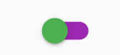
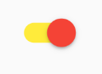
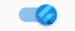

<!DOCTYPE html>
<html lang="en">

<head><meta name="generator" content="Hexo 3.9.0">
  <meta charset="utf-8">
    
  <meta name="viewport" content="width=device-width, initial-scale=1, maximum-scale=1">
  <title>
    flutter--单选开关Switch、SwitchListTile |  MonkeyInWind
  </title>
  
  <link rel="shortcut icon" href="/favicon.ico">
  
  <link rel="stylesheet" href="/css/style.css">
  <script src="/js/pace.min.js"></script>

  

<script type="text/javascript">
(function(i,s,o,g,r,a,m){i['GoogleAnalyticsObject']=r;i[r]=i[r]||function(){
(i[r].q=i[r].q||[]).push(arguments)},i[r].l=1*new Date();a=s.createElement(o),
m=s.getElementsByTagName(o)[0];a.async=1;a.src=g;m.parentNode.insertBefore(a,m)
})(window,document,'script','//www.google-analytics.com/analytics.js','ga');

ga('create', 'UA-155359064-1', 'auto');
ga('send', 'pageview');

</script>


  

</head>

</html>

<body>
  <div id="app">
    <main class="content">
      <section class="outer">
  <article id="post-flutterSwitchWidget" class="article article-type-post" itemscope
  itemprop="blogPost" data-scroll-reveal>

  <div class="article-inner">
    
    <header class="article-header">
       
<h1 class="article-title sea-center" style="border-left:0" itemprop="name">
  flutter--单选开关Switch、SwitchListTile
</h1>
  

    </header>
    

    
    <div class="article-meta">
      <a href="/post/flutterSwitchWidget/" class="article-date">
  <time datetime="2020-01-05T11:37:21.000Z" itemprop="datePublished">2020-01-05</time>
</a>
      
    </div>
    

    
    
    <div class="tocbot"></div>


    

    <div class="article-entry" itemprop="articleBody">
      


      

      
      <h2 id="一、Switch"><a href="#一、Switch" class="headerlink" title="一、Switch"></a>一、Switch</h2><p>先看一下<code>Switch</code>的<code>constructor</code></p>
<a id="more"></a>
<figure class="highlight plain"><table><tr><td class="gutter"><pre><span class="line">1</span><br><span class="line">2</span><br><span class="line">3</span><br><span class="line">4</span><br><span class="line">5</span><br><span class="line">6</span><br><span class="line">7</span><br><span class="line">8</span><br><span class="line">9</span><br><span class="line">10</span><br><span class="line">11</span><br><span class="line">12</span><br><span class="line">13</span><br></pre></td><td class="code"><pre><span class="line">const Switch(&#123;</span><br><span class="line">  Key key,</span><br><span class="line">  @required bool value,</span><br><span class="line">  @required ValueChanged&lt;bool&gt; onChanged,</span><br><span class="line">  Color activeColor,</span><br><span class="line">  Color activeTrackColor,</span><br><span class="line">  Color inactiveThumbColor,</span><br><span class="line">  Color inactiveTrackColor,</span><br><span class="line">  ImageProvider activeThumbImage,</span><br><span class="line">  ImageProvider inactiveThumbImage,</span><br><span class="line">  MaterialTapTargetSize materialTapTargetSize,</span><br><span class="line">  DragStartBehavior dragStartBehavior: DragStartBehavior.start</span><br><span class="line">&#125;)</span><br></pre></td></tr></table></figure>

<p>怎么用看demo</p>
<figure class="highlight plain"><table><tr><td class="gutter"><pre><span class="line">1</span><br><span class="line">2</span><br><span class="line">3</span><br><span class="line">4</span><br><span class="line">5</span><br><span class="line">6</span><br><span class="line">7</span><br><span class="line">8</span><br><span class="line">9</span><br><span class="line">10</span><br><span class="line">11</span><br><span class="line">12</span><br><span class="line">13</span><br><span class="line">14</span><br><span class="line">15</span><br><span class="line">16</span><br><span class="line">17</span><br><span class="line">18</span><br><span class="line">19</span><br><span class="line">20</span><br><span class="line">21</span><br><span class="line">22</span><br><span class="line">23</span><br><span class="line">24</span><br><span class="line">25</span><br><span class="line">26</span><br><span class="line">27</span><br><span class="line">28</span><br><span class="line">29</span><br><span class="line">30</span><br><span class="line">31</span><br><span class="line">32</span><br><span class="line">33</span><br><span class="line">34</span><br><span class="line">35</span><br><span class="line">36</span><br><span class="line">37</span><br><span class="line">38</span><br></pre></td><td class="code"><pre><span class="line">import &apos;package:flutter/material.dart&apos;;</span><br><span class="line"></span><br><span class="line">void main() =&gt; runApp(MyApp());</span><br><span class="line"></span><br><span class="line">class MyApp extends StatelessWidget &#123;</span><br><span class="line">  @override</span><br><span class="line">  Widget build(BuildContext context) &#123;</span><br><span class="line">    return new MaterialApp(</span><br><span class="line">      home: Scaffold(</span><br><span class="line">        body: SwitchDemo()</span><br><span class="line">      )</span><br><span class="line">    );</span><br><span class="line">  &#125;</span><br><span class="line">&#125;</span><br><span class="line"></span><br><span class="line">class SwitchDemo extends StatefulWidget &#123;</span><br><span class="line">  @override</span><br><span class="line">  _SwitchDemoState createState() =&gt; new _SwitchDemoState();</span><br><span class="line">&#125;</span><br><span class="line"></span><br><span class="line">class _SwitchDemoState extends State&lt;SwitchDemo&gt; &#123;</span><br><span class="line">  bool _switchSelected = false;</span><br><span class="line"></span><br><span class="line">  @override</span><br><span class="line">  Widget build(BuildContext context) &#123;</span><br><span class="line">    return Container(</span><br><span class="line">      alignment: Alignment.center,</span><br><span class="line">      child: Switch(</span><br><span class="line">        value: _switchSelected,</span><br><span class="line">        onChanged: (value) &#123;</span><br><span class="line">          setState(() &#123;</span><br><span class="line">            _switchSelected = value;</span><br><span class="line">          &#125;);</span><br><span class="line">        &#125;</span><br><span class="line">      )</span><br><span class="line">    );</span><br><span class="line">  &#125;</span><br><span class="line">&#125;</span><br></pre></td></tr></table></figure>

<p>可以看见模拟器中心有个蓝色的小开关，点击可以改变状态，这是最基础的用法。<br>这里需要注意的是<code>value</code>只能是<code>bool</code>类型，并且写死之后点击开关是没有效果的。</p>
<h3 id="activeColor-amp-activeTrackColor-amp-inactiveThumbColor-amp-inactiveTrackColor"><a href="#activeColor-amp-activeTrackColor-amp-inactiveThumbColor-amp-inactiveTrackColor" class="headerlink" title="activeColor &amp; activeTrackColor &amp; inactiveThumbColor &amp; inactiveTrackColor"></a>activeColor &amp; activeTrackColor &amp; inactiveThumbColor &amp; inactiveTrackColor</h3><p>先看一下这几个颜色，<code>active</code>对应开关打开，也就是<code>value</code>为<code>true</code>的状态，<code>inactive</code>对应开关关闭，<code>value</code>为<code>false</code>的状态。</p>
<figure class="highlight plain"><table><tr><td class="gutter"><pre><span class="line">1</span><br><span class="line">2</span><br><span class="line">3</span><br><span class="line">4</span><br><span class="line">5</span><br><span class="line">6</span><br><span class="line">7</span><br><span class="line">8</span><br><span class="line">9</span><br><span class="line">10</span><br><span class="line">11</span><br><span class="line">12</span><br></pre></td><td class="code"><pre><span class="line">Switch(</span><br><span class="line">  value: _switchSelected,</span><br><span class="line">  activeColor: Colors.red,</span><br><span class="line">  activeTrackColor: Colors.yellow,</span><br><span class="line">  inactiveThumbColor: Colors.green,</span><br><span class="line">  inactiveTrackColor: Colors.purple,</span><br><span class="line">  onChanged: (value) &#123;</span><br><span class="line">  setState(() &#123;</span><br><span class="line">    _switchSelected = value;</span><br><span class="line">  &#125;);</span><br><span class="line">  &#125;</span><br><span class="line">)</span><br></pre></td></tr></table></figure>

<p><br></p>
<h3 id="activeThumbImage-amp-inactiveThumbImage"><a href="#activeThumbImage-amp-inactiveThumbImage" class="headerlink" title="activeThumbImage &amp; inactiveThumbImage"></a>activeThumbImage &amp; inactiveThumbImage</h3><p>这两个放一起，开关圆点的图片，和颜色一样<code>active、inactive</code>对应开关的两种状态。</p>
<figure class="highlight plain"><table><tr><td class="gutter"><pre><span class="line">1</span><br><span class="line">2</span><br><span class="line">3</span><br><span class="line">4</span><br><span class="line">5</span><br><span class="line">6</span><br><span class="line">7</span><br><span class="line">8</span><br><span class="line">9</span><br><span class="line">10</span><br></pre></td><td class="code"><pre><span class="line">Switch(</span><br><span class="line">  value: _switchSelected,</span><br><span class="line">  activeThumbImage: AssetImage(&apos;./images/logo.png&apos;),</span><br><span class="line">  inactiveThumbImage: AssetImage(&apos;./images/logo.png&apos;),</span><br><span class="line">  onChanged: (value) &#123;</span><br><span class="line">    setState(() &#123;</span><br><span class="line">      _switchSelected = value;</span><br><span class="line">    &#125;);</span><br><span class="line">  &#125;</span><br><span class="line">)</span><br></pre></td></tr></table></figure>

<p>同一张图片，为啥不放两个不同的图片，因为我懒。<br><br></p>
<h3 id="materialTapTargetSize"><a href="#materialTapTargetSize" class="headerlink" title="materialTapTargetSize"></a>materialTapTargetSize</h3><p>有效点击区域的大小，在<a href="/post/flutterButtonWidget">按钮 各种Button</a>介绍过</p>
<h3 id="dragStartBehavior"><a href="#dragStartBehavior" class="headerlink" title="dragStartBehavior"></a>dragStartBehavior</h3><p>这个需要注意一下，直接写会报错<code>undefind</code>，需要<code>import &#39;package:flutter/gestures.dart&#39;;</code>。<br>看一下完整demo</p>
<figure class="highlight plain"><table><tr><td class="gutter"><pre><span class="line">1</span><br><span class="line">2</span><br><span class="line">3</span><br><span class="line">4</span><br><span class="line">5</span><br><span class="line">6</span><br><span class="line">7</span><br><span class="line">8</span><br><span class="line">9</span><br><span class="line">10</span><br><span class="line">11</span><br><span class="line">12</span><br><span class="line">13</span><br><span class="line">14</span><br><span class="line">15</span><br><span class="line">16</span><br><span class="line">17</span><br><span class="line">18</span><br><span class="line">19</span><br><span class="line">20</span><br><span class="line">21</span><br><span class="line">22</span><br><span class="line">23</span><br><span class="line">24</span><br><span class="line">25</span><br><span class="line">26</span><br><span class="line">27</span><br><span class="line">28</span><br><span class="line">29</span><br><span class="line">30</span><br><span class="line">31</span><br><span class="line">32</span><br><span class="line">33</span><br><span class="line">34</span><br><span class="line">35</span><br><span class="line">36</span><br><span class="line">37</span><br><span class="line">38</span><br><span class="line">39</span><br><span class="line">40</span><br><span class="line">41</span><br></pre></td><td class="code"><pre><span class="line">import &apos;package:flutter/material.dart&apos;;</span><br><span class="line">import &apos;package:flutter/gestures.dart&apos;;</span><br><span class="line"></span><br><span class="line">void main() =&gt; runApp(MyApp());</span><br><span class="line"></span><br><span class="line">class MyApp extends StatelessWidget &#123;</span><br><span class="line">  // This widget is the root of your application.</span><br><span class="line">  @override</span><br><span class="line">  Widget build(BuildContext context) &#123;</span><br><span class="line">    return new MaterialApp(</span><br><span class="line">      home: Scaffold(</span><br><span class="line">        body: SwitchDemo()</span><br><span class="line">      )</span><br><span class="line">    );</span><br><span class="line">  &#125;</span><br><span class="line">&#125;</span><br><span class="line"></span><br><span class="line">class SwitchDemo extends StatefulWidget &#123;</span><br><span class="line">  @override</span><br><span class="line">  _SwitchDemoState createState() =&gt; new _SwitchDemoState();</span><br><span class="line">&#125;</span><br><span class="line"></span><br><span class="line">class _SwitchDemoState extends State&lt;SwitchDemo&gt; &#123;</span><br><span class="line">  bool _switchSelected = false;</span><br><span class="line"></span><br><span class="line">  @override</span><br><span class="line">  Widget build(BuildContext context) &#123;</span><br><span class="line">    return Container(</span><br><span class="line">      alignment: Alignment.center,</span><br><span class="line">      child: Switch(</span><br><span class="line">        value: _switchSelected,</span><br><span class="line">        dragStartBehavior: DragStartBehavior.down,</span><br><span class="line">        onChanged: (value) &#123;</span><br><span class="line">          setState(() &#123;</span><br><span class="line">            _switchSelected = value;</span><br><span class="line">          &#125;);</span><br><span class="line">        &#125;</span><br><span class="line">      )</span><br><span class="line">    );</span><br><span class="line">  &#125;</span><br><span class="line">&#125;</span><br></pre></td></tr></table></figure>

<p>可以设置成<code>start</code>或者<code>down</code>。<br>源码里边对这个的解释是设置为<code>start</code>的时候拖拽会在开始拖动时开始触发，设置为<code>down</code>则在手指按下时开始触发，区别是<code>start</code>动画更平滑，<code>down</code>反应更灵敏。<br>试了一下，<code>start</code>和<code>down</code>并没有看出有什么区别。。。</p>
<h2 id="二、SwitchListTile"><a href="#二、SwitchListTile" class="headerlink" title="二、SwitchListTile"></a>二、SwitchListTile</h2><p>先看一下<code>constructor</code></p>
<figure class="highlight plain"><table><tr><td class="gutter"><pre><span class="line">1</span><br><span class="line">2</span><br><span class="line">3</span><br><span class="line">4</span><br><span class="line">5</span><br><span class="line">6</span><br><span class="line">7</span><br><span class="line">8</span><br><span class="line">9</span><br><span class="line">10</span><br><span class="line">11</span><br><span class="line">12</span><br><span class="line">13</span><br><span class="line">14</span><br><span class="line">15</span><br><span class="line">16</span><br><span class="line">17</span><br></pre></td><td class="code"><pre><span class="line">const Switch(&#123;</span><br><span class="line">  Key key,</span><br><span class="line">  @required bool value,</span><br><span class="line">  @required ValueChanged&lt;bool&gt; onChanged,</span><br><span class="line">  Color activeColor,</span><br><span class="line">  Color activeTrackColor,</span><br><span class="line">  Color inactiveThumbColor,</span><br><span class="line">  Color inactiveTrackColor,</span><br><span class="line">  ImageProvider activeThumbImage,</span><br><span class="line">  ImageProvider inactiveThumbImage,</span><br><span class="line">  Widget title,</span><br><span class="line">  Widget subtitle,  </span><br><span class="line">  bool isThreeLine: false,</span><br><span class="line">  bool dense,   </span><br><span class="line">  Widget secondary,  </span><br><span class="line">  bool selected: false,</span><br><span class="line">&#125;)</span><br></pre></td></tr></table></figure>

<p><code>SwitchListTile</code>一部分和<code>Switch</code>是重合的，另一部分和<code>CheckboxList</code>是重合的（忘了的话看这里：<a href="/post/flutterCheckWidget">复选框CheckBox、CheckboxListTile</a><br>）。。。这里就不重复了。</p>

      
      <!-- 打赏 -->
      
    </div>
    <footer class="article-footer">
      <!-- 
      <a data-url="http://yoursite.com/post/flutterSwitchWidget/" data-id="ck5v1jtxq000bz0hssenz7e5w"
        class="article-share-link">分享</a>
      
       -->
    </footer>

  </div>

  
  
  <nav class="article-nav">
    
      <a href="/post/flutterRadioWidget/" class="article-nav-link">
        <strong class="article-nav-caption">上一篇</strong>
        <div class="article-nav-title">
          
            flutter--单选框Radio、RadioListTile
          
        </div>
      </a>
    
    
      <a href="/post/flutterCheckWidget/" class="article-nav-link">
        <strong class="article-nav-caption">下一篇</strong>
        <div class="article-nav-title">flutter--复选框CheckBox、CheckboxListTile</div>
      </a>
    
  </nav>


  

  
  
<!-- valine评论 -->
<div id="vcomments-box">
    <div id="vcomments">
    </div>
</div>
<script src="//cdn1.lncld.net/static/js/3.0.4/av-min.js"></script>
<script src='https://cdn.jsdelivr.net/npm/valine@1.3.10/dist/Valine.min.js'></script>
<script>
    new Valine({
        el: '#vcomments',
        notify: false,
        verify: false,
        app_id: '',
        app_key: '',
        path: window.location.pathname,
        avatar: 'mp',
        placeholder: '给我的文章加点评论吧~',
        recordIP: true
    });
    const infoEle = document.querySelector('#vcomments .info');
    if (infoEle && infoEle.childNodes && infoEle.childNodes.length > 0) {
        infoEle.childNodes.forEach(function (item) {
            item.parentNode.removeChild(item);
        });
    }
</script>
<style>
    #vcomments-box {
        padding: 5px 30px;
    }

    @media screen and (max-width: 800px) {
        #vcomments-box {
            padding: 5px 0px;
        }
    }

    #vcomments-box #vcomments {
        background-color: #fff;
    }

    .v .vlist .vcard .vh {
        padding-right: 20px;
    }

    .v .vlist .vcard {
        padding-left: 10px;
    }
</style>

  

  
  
  

</article>

</section>
      <footer class="footer">
  <div class="outer">
    <ul class="list-inline">
      <li>
        &copy;
        2020-01
        MonkeyInWind
      </li>
      <li>
        <!--
        
          Power by
        
        
        <a href="https://hexo.io" target="_blank">Hexo</a> Theme <a href="https://github.com/Shen-Yu/hexo-theme-ayer" target="_blank">Ayer</a>
        
        -->
        <a target="_blank" href='https://github.com/MonkeyInWind'>GitHub</a>
      </li>
    </ul>
    <ul class="list-inline">
      <li>
        
      </li>
      <li>
        <!-- cnzz统计 -->
        
      </li>
    </ul>
  </div>
</footer>

    <div class="to_top">
        <div class="totop" id="totop">
  <i class="ri-arrow-up-line"></i>
</div>
      </div>
    </main>
    
    <aside class="sidebar">
      
        <button class="navbar-toggle"></button>
<nav class="navbar">
  
  <div class="logo">
    <a href="/"></a>
  </div>
  
  <ul class="nav nav-main">
    
    <li class="nav-item">
      <a class="nav-item-link" href="/">主页</a>
    </li>
    
    <li class="nav-item">
      <a class="nav-item-link" href="/archives">目录</a>
    </li>
    
    <li class="nav-item">
      <a class="nav-item-link" href="/Categories">分类</a>
    </li>
    
    <li class="nav-item">
      <a class="nav-item-link" href="/About">关于我</a>
    </li>
    
  </ul>
</nav>
<nav class="navbar navbar-bottom">
  <ul class="nav">
    <li class="nav-item">
      
      <a class="nav-item-link nav-item-search"  title="Search">
        <i class="ri-search-line"></i>
      </a>
      
      
    </li>
  </ul>
</nav>
<div class="search-form-wrap">
  <div class="local-search local-search-plugin">
  <input type="search" id="local-search-input" class="local-search-input" placeholder="Search...">
  <div id="local-search-result" class="local-search-result"></div>
</div>
</div>
      </aside>
      <div id="mask"></div>

<!-- #reward -->
<div id="reward">
  <span class="close"><i class="ri-close-line"></i></span>
  <p class="reward-p"><i class="ri-cup-line"></i>请我喝杯咖啡吧~</p>
  <div class="reward-box">
    
    
  </div>
</div>
      <script src="/js/jquery-2.0.3.min.js"></script>
<script src="/js/jquery.justifiedGallery.min.js"></script>
<script src="/js/lazyload.min.js"></script>
<script src="/js/busuanzi-2.3.pure.min.js"></script>

  <script src="/fancybox/jquery.fancybox.min.js"></script>


  <script src="/js/tocbot.min.js"></script>
  <script>
    // Tocbot_v4.7.0  http://tscanlin.github.io/tocbot/
    tocbot.init({
      tocSelector: '.tocbot',
      contentSelector: '.article-entry',
      headingSelector: 'h1, h2, h3, h4, h5, h6',
      hasInnerContainers: true,
      scrollSmooth: true,
      positionFixedSelector: '.tocbot',
      positionFixedClass: 'is-position-fixed',
      fixedSidebarOffset: 'auto',
    });
  </script>


<script>
  var ayerConfig = {
    mathjax: false
  }
</script>

<script src="/js/ayer.js"></script>

<script src="https://cdn.jsdelivr.net/npm/jquery-modal@0.9.2/jquery.modal.min.js"></script>
<link rel="stylesheet" href="https://cdn.jsdelivr.net/npm/jquery-modal@0.9.2/jquery.modal.min.css">


<script type="text/javascript" src="https://js.users.51.la/20544303.js"></script>
  
  
  </div>
</body>

</html>